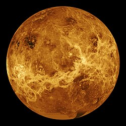

After cosmic inflation stopped, energy transferred to matter and light, causing the universe to expand exponentially, much faster than the speed of light, for a brief period of time. During that period of time, the universe's earliest elements, Hydrogen, Helium, Lithium and Beryllium soon came to creation. Soon after, the universe had cooled enough and expanded at a much slower and gradual rate.
Cosmic Inflation
13.8 billion years ago, the universe expanded from an extremely small, extremely hot and extremely dense state faster than the speed of light for a fraction of a second. It has expanded since then and become less dense and cooler. The expansion of the universe actually refers to the increase in the space between galaxies.
What lies for the future?
For many years, scientists thought the universe's current expansion was slowing down. But in fact, cosmic expansion is speeding up. In 1998, astronomers found that certain supernovae, bright stellar explosions, were fainter than expected. They concluded this could only happen if the supernovae had moved farther away, at a faster rate than predicted. Scientists suspect a mysterious substance they call dark energy is accelerating expansion. Future research may yield new surprises, but cosmologists suggest it's likely the universe will continue to expand forever.
First Stars
Gas was not uniformly distributed throughout the universe. Cooler areas of space were lumpier, with denser clouds of gas. As these clumps grew more massive, their gravity attracted additional matter. As they became denser, and more compact, the centers of these clumps became hotter - hot enough that nuclear fusion occurred in their centers. These were the first stars. They were 30 to 300 times more massive than our Sun and millions of times brighter. Over several hundred million years, the first stars collected into the first galaxies.
Dark Ages
After the formation of the very first atoms, the universe became opaque at shorter wavelengths due to the absorbing effects of all the hydrogen atoms. For the next 200 million years, the universe remained dark. There were no stars to shine. At this point, the universe consisted of a sea of hydrogen atoms, helium and traces of heavier elements.
Solar System
There are 9 planets in the Solar System
Mercury
The first and smallest planet from the Sun. It is only slightly larger than Earth's moon. From Mercury, the sun would be three times larger, and seven times brighter than it is on Earth. It is extremely hot and cold, with temperatures reaching up to 430 degrees celcius in the day, and -180 degrees celcius in the night with no atmosphere to retain heat unlike Earth. It is the fastest planet, orbiting around the Sun every 88 Earth days.

Venus
The second planet from the Sun, and closest to Earth. It is the hottest planet in the solar system, sometimes being called Earth's twin. It is the third brightest object in the sky after the Sun and Moon. Its thick atmosphere traps heat, making it the hottest planet in the solar system with temperatures high enough to melt lead. Beneath the dense, persistent clouds, its surface has volcanoes and deformed mountains.
Earth
The Third Planet from the Sun, and the only planet known to harbour life. This is due to Earth mainly consisting of water, the only planet in the Solar System sustaining liquid surface water. Almost all of Earth's water is contained in its oceans, covering 70.8% of its crust.
Mars
The Fourth Planet from the Sun, it is a dusty, cold, desert world with a very thin atmosphere. Mars has seasons, polar ice caps, extinct volcanoes, canyons and weather. Its red appearance is caused by iron minerals in the Martian dirt oxidising, giving it its namesake, "Red Planet"
Jupiter
The fifth planet from the sun and the largest in the Solar System. It is also the oldest planet, forming from dust and gases left over from the Sun's formation 4.6 billion years ago. It has the shortest day, lasting only 9.9 hours.
Saturn
It is the Sixth Planet from the Sun, and is the second-largest planet in the solar system. It is a massive ball made of mostly hydrogen and helium. It is not the only planet to have rings, but it has the most spectacular and complex ones.
Uranus
It is the seventh planet from the Sun, and has the third largest diameter in the solar system. It spins almost sideways, orbiting the Sun like a rolling ball. It is a very cold and windy planet, surrounded by 13 faint rings and 28 small moons.
Neptune
It is the eighth and most distant planet in the Solar System. It is dark, cold and whipped by super sonic winds, and is known as an ice giant. It is 30 times as far from the Sun as Earth. Neptune is the only planet in the solar system not visible to the naked eye. It is so far from the sun, that high noon would seem like dim twilight to us. The warm light we see on Earth is roughly 900 times as bright as sunlight on Neptune.
9 planets to 8 Planets?
Did you know? The Solar System used to have 9 planets! The ninth planet was actually Pluto. However, in the late 1990s, astronomers began debating over whether or not Pluto was still considered a planet. The requirements for a planet are:
It orbits the sun
Is Spherical or nearly spherical due to its gravity
Has "cleared the neighbourhood" of its orbit
Revision Quiz
1. Which of these requirements must be fufilled for a planet?
Theories of Space
Black Holes
Black Holes are formed when dead stars grow too dense, warping the fabric of space-time downwards infinitely. They are extremely dense that gravity beneath its surface, the event horizon, is strong enough that nothing - not even light - can escape. The event horizon is a boundary that contains all matter that makes up the black hole.
White Hole Theory
Theoretical tunnels through spacetime that potentially connect distant points in the universe. Theoretically, it could create a shortcut from long journeys across the universe. However, they are prone to sudden collapse, high radiation and dangerous contact with exotic matter.
Worm Hole Theory
Theoretical opposite of black holes, nothing can enter, but matter and light can escape. Objects can only be ejected, but not absorbed. This is only a theory, with no real-world counterpart.
Multiverse Theory
The Multiverse Theory suggests that our universe may not be the only one. In fact, there may be an infinity of universes with their own laws of physics, their own collection of stars and galaxies, and even their own intelligent civilizations. You may see this a lot in the Marvel Series.
Big Freeze Theory
Scientists have theorised that eventually, our universe will cool as it expands, reaching to a point where it is too cold to sustain life. This is also known as Heat Death, where heat in the system is distributed evenly, leaving no energy to be used.
What happens if you fall inside a black hole?
You go through "spaghettification". Your body will violently contort and explode due to the contrasting different gravitational forces. Its gravity would exert a much stronger pull on your feet than your head, stretching you out along the direction of travel and turning you into a noodle.
What happens if you fall inside a white hole?
It's impossible to fall inside a white hole. White holes act as anit-black holes, in which they repel all matter and light.
What happens if you fall inside a worm hole?
Due to the unstable nature of worm holes, you would most likely go through "spaghettification", and come out as radiation on the other side of the worm hole. Worm holes are very prone to collapsing quickly, before the person could even travel any significant distance.
Is it possible to travel to other universes?
Unfortunately, no. Universes are far beyond the observable horizon of space, and move away much faster than the speed of light. It would be impossible no matter what to travel to another universe.
Big Crunch
While the Big Freeze seems like the most likely possibility for the fate of the universe, other scientists have theorised the Big Crunch Theory. It refers to the universe's expansion eventually reversing and collapsing in on itself, possibly leading to a singularity similar to the Big Bang, though the opposite of it.
Solar System Revision Minigame
PC: W to rise up Mobile: Click on the button to rise up
Collect the planets in an ascending order based off of their distance from the sun.
Do not touch the top or bottom of the screen or you lose